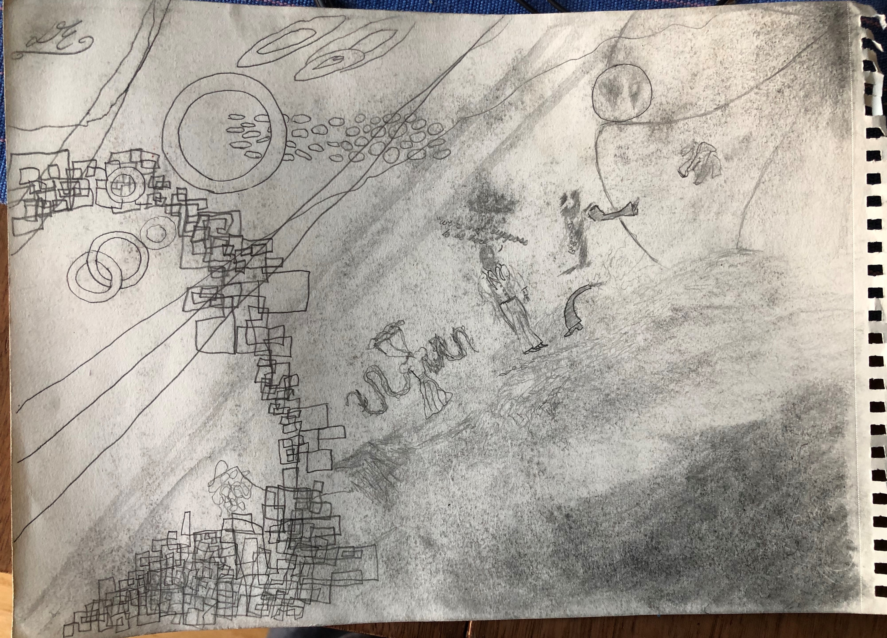

Main

Untitled, Drawing, 2016
One of the earliest drawing that I had made during my third year of High School. One day, when I was bored, I stared out of the window looking at a church, admiring it's architexture. So I ended up turning my homeword assignment over as started drawing my interpretaion of the dome that was fixed atop the church.

Frédéric Chopin Portrait, Drawing, 2017
An early work, during a time that I was very fond of the musican, Chopin. I was coping over a charcoal portrait of him but adding my own style which was to draw his face but with my pencil strokes going only in one direction.

Untitled, Drawing, 2017
I'm a big fan of trains ever since I was a child, and I've always liked how they looked, moved and functioned. I drew this one day when I was listen to a music piece that gave me an image of a train racing across an unsteady brigde.

City waves, Drawing, 2018
Taken from the cover of William Basiski's album, The Disintigration loops. But in it, it show what appears to be some girl in a white dress with her shoulder puffed out and cropped at the far left. As well as how the clouds looked blending with the buildings in the background.

Untitled, Drawing, 2018
A picture of a lake.

Wanderer in Flower Field, Drawing, 2018
Around my college campus, there was an abundance of roses growing everywhere. And as I like to do, I go one walks and imaging that I was in a field full of roses with some growing into larger flowers and thick vines.

Nonsense, Drawing, 2018
An attempt to make a draw that had no meaning or narrative but stuff that came to mind while drawing it.

Museum, Drawing, 2019
A rule that I assinged myself was that all lines that I draw shouldn't be straight but curved and fluid.

LSD notes, Writings and Doodles, 1/4/20
My 2nd time taking LSD but this time I decied to take a higher dosage and log the effects. Over the course of several hours, as the effects grew ever stronger. I found increadibly difficult to concentrate and pay attention on what I was writing, or drawing.

Stream of Conscientious, Drawing, 1/4/20
While on acid, I decided to see what I would try to draw. I can tell you what I was seeing or thinking. All I can say that there was a sense of everything being connected in someway.

City Patterns, Drawing, 2020
A personal project that I had been working on and off for 2 months during my thrid year of college. During the winter break, I had experimented with pychedelics and it changed how I saw the world, as a place full of patterns. So working with artist pens, I decied to sit down and work on something that I would take my time with.

Monks in search of Faith, Drawing, 2020
A quick gift to a distant aunt that I had made the night before she was about to leave. She is a devoted catholic, so I thought to draw her something that wasn't based around faith in a catholic sense but faith as an idea. Also inspried after seeing the 1966 film, Andrei Rublev.

Flowers, Painting, 3/4/2020
A painting inspired by the works of Ivan Seal. My own itiration of his style. While painting, I didn't have an yellow paint on hand, I only had red and blue, so I had to make do with what I had.


Bell (B/W & color), Painting, 2020
A painting for a school assinment where we had to try our skills in painting in monochrome and color. I though about how the minds works and how we think of imagination. So making the sense take place on this surreal island where these tree's holding this giant bell made sense to me.

Nostalghia, Painting, 2020
A painting that shows the final seen from the 1983 film, Nostalghia. where it shows our main charater sitting by a puddle with his dog with his house in the background. But as the camera moves out, we see that he's actually in an abandoned cathedral.